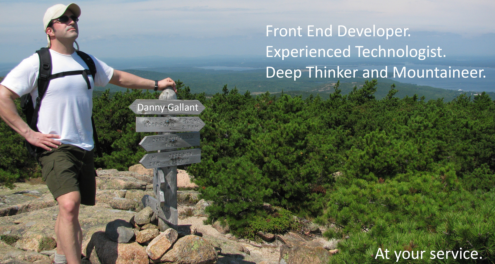

I have extensive experience in various facets of technology. I have worked with SAP Canada/SAP Americas, Qwest Cyber Solutions and Thomson Reuters. I have worn many hats in my roles with these companies.
You can see project examples by clicking the images to the right. You can also see a current resume, as well as my GitHub and Linkedin profiles at the links below.